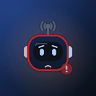
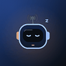
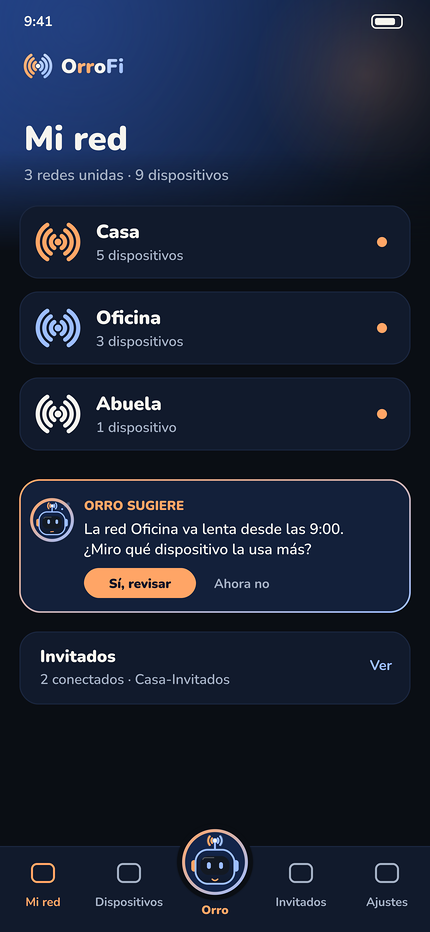
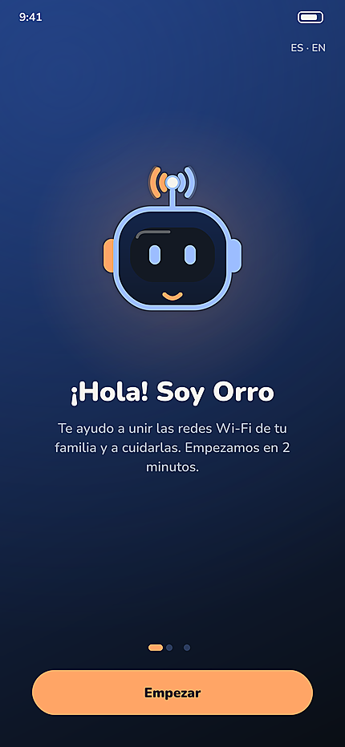
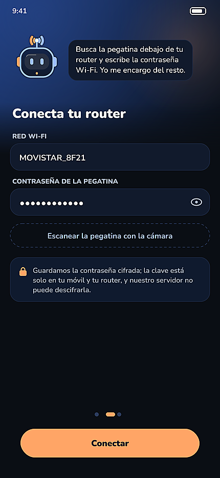
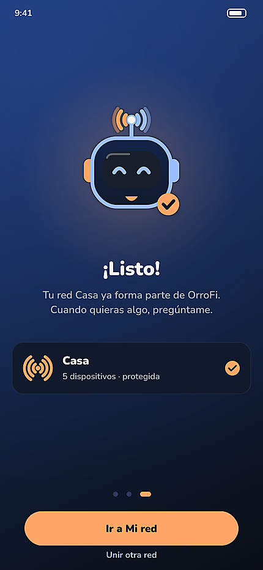
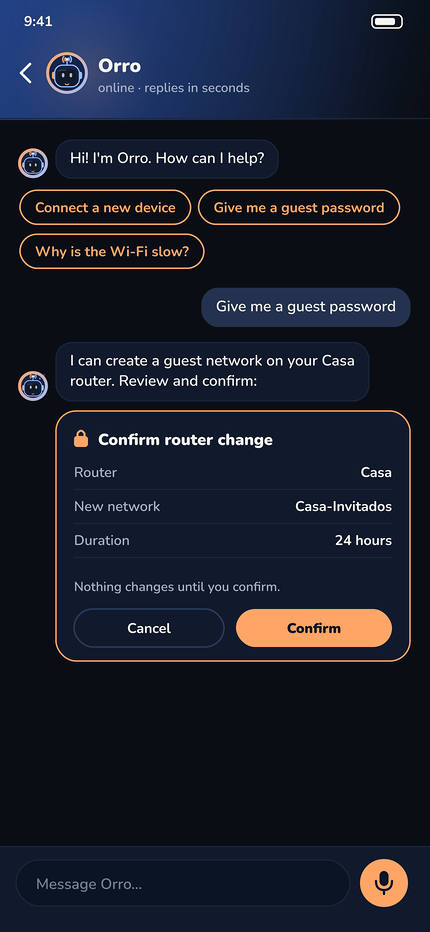

Estados animados
96 px en bucle (GIF). Toca para ver 512 px (APNG animado) o el storyboard.

512 px · storyboard


512 px · storyboard


512 px · storyboard


512 px · storyboard


512 px · storyboard


512 px · storyboard


512 px · storyboard


512 px · storyboard



512 px · storyboard



512 px · storyboard

Hoja animada

Pantallas (iPhone 430×932, tema oscuro)












Versión plana (SVG / PNG)
orro-angry.png orro-angry.svg orro-celebrating.png orro-celebrating.svg orro-content.png orro-content.svg orro-error.png orro-error.svg orro-idle.png orro-idle.svg orro-listening.png orro-listening.svg orro-sleepy.png orro-sleepy.svg orro-success.png orro-success.svg orro-surprised.png orro-surprised.svg orro-thinking.png orro-thinking.svg


Avatares 96 / 40 px y render grande
orro-angry-40.png orro-angry-96.png orro-celebrating-40.png orro-celebrating-96.png orro-content-40.png orro-content-96.png orro-error-40.png orro-error-96.png orro-idle-40.png orro-idle-96.png orro-listening-40.png orro-listening-96.png orro-sleepy-40.png orro-sleepy-96.png orro-success-40.png orro-success-96.png orro-surprised-40.png orro-surprised-96.png orro-thinking-40.png orro-thinking-96.png orro-hero-1024.png


Privacidad de contraseñas
Guardamos la contraseña cifrada; la clave está solo en tu móvil y tu router, y nuestro servidor no puede descifrarla.
El QR de las pantallas es un ejemplo con contraseña ficticia EJEMPLO-0000.